%%{init: {"theme": "neutral", "fontSize": 15, "flowchart": {"curve": "basis", "nodeSpacing": 38, "rankSpacing": 55}}}%%
flowchart TB
QR["Quantitative Researcher<br/>n = 47"]
DS["Data Scientist<br/>n = 506"]
DA["Data Analyst<br/>n = 303"]
AE["Analytics Engineer<br/>n = 65"]
DE["Data Engineer<br/>n = 337"]
ML["ML Engineer<br/>n = 277"]
RS["Research Scientist<br/>n = 156"]
AI["AI Engineer<br/>n = 696"]
FD["Forward Deployed<br/>n = 430"]
QR ---|"1.41<br/>statistics, forecasting"| DS
DA ---|"1.28<br/>SQL, BI ↔ Python, classical ML"| DS
AE ---|"1.45<br/>dbt, pipelines ↔ BI, product analytics"| DA
DE ---|"0.98<br/>cloud, Spark ↔ SQL, dbt"| AE
DS ---|"1.12<br/>+ MLOps, serving, containers"| ML
RS -. "0.99<br/>research, experimentation ↔<br/>MLOps, serving, CI/CD" .- ML
ML ---|"1.10<br/>+ LLM apps, agents, NLP"| AI
DS -. "1.48 direct" .- AI
AI -. "1.38<br/>LLM apps, NLP ↔<br/>customer-facing, stakeholders" .- FD
classDef inf fill:#dbe8f8,stroke:#0072B2,color:#0b0b0b;
classDef eng fill:#fde3d8,stroke:#D55E00,color:#0b0b0b;
classDef data fill:#e4dde9,stroke:#882255,color:#0b0b0b;
classDef hinge fill:#0072B2,stroke:#0072B2,color:#ffffff;
class QR,DA,DS inf;
class AI,FD,RS eng;
class AE,DE data;
class ML hinge;
AI / Data Job Skills
What does a data scientist do now — and how does that differ from an AI engineer, a data analyst or an analytics engineer? Measured from ~3,000 job ads European employers posted in 2026.
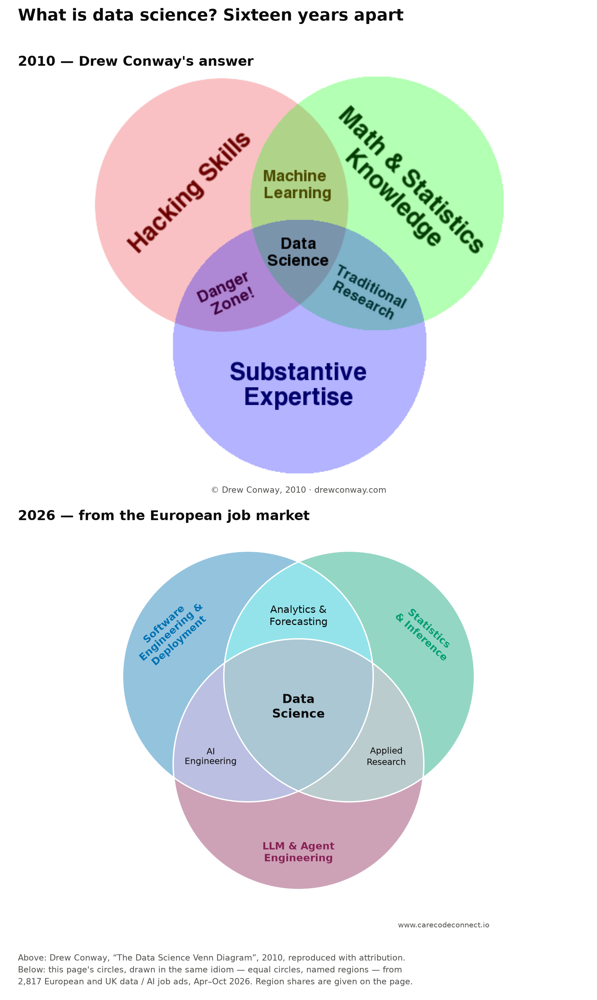
Executive summary
Is “AI Engineer” the new name for “Data Scientist”, or a different job? 2,817 job ads, each scored against a fixed vocabulary of 44 skills.
- “AI Engineer” is the most frequent title at 25%, ahead of “Data Scientist” (18%) and “Data Engineer” (12%).
- Stakeholder communication is the most-required skill at 71%, ahead of Python at 57%. 42% of AI Engineer ads do not require Python.
- Statistics is required in 73% of Data Scientist ads and 11% of AI Engineer ads.
- The two titles are 1.48 apart on their requirement profiles, further apart than Data Scientist and Data Analyst (1.28).
- ML Engineer sits 1.12 from Data Scientist and 1.10 from AI Engineer, the shortest link between the two.
- Data Scientist, AI Engineer and ML Engineer share 5 required skills: Python, mentoring / leadership, model serving, software engineering, stakeholder communication.
- Data Engineer and Analytics Engineer are 0.98 apart, the shortest distance on the map. Data governance is required in 75% and 68% of their ads, against 22% elsewhere.
- 28% of ads fall in Conway’s “danger zone” — code and domain, no statistics — and 51% require a skill none of his circles covers.
The question: is AI Engineer the new Data Scientist?
In September 2010 Drew Conway drew three overlapping circles — hacking skills, maths and statistics, substantive expertise — with data science in the middle and “danger zone!” where code met domain knowledge without statistics. He meant the warning: people who can pull data and run a regression without knowing what the coefficients mean.
Sixteen years on, employers advertise for “AI Engineer” more often than for “Data Scientist”. Conway’s is the only one of the field’s canonical pictures that can be tested against a job ad — it says what a data scientist must know, and knowledge is what ads ask for. So: do his circles still describe what is being hired, and are the two titles one job or two?
How this was measured: one fixed question per skill, every ad
NoteWhich ads, and where they came from
- 2,817 job ads, de-duplicated, with a data / AI title: AI Engineer 696, Data Scientist 506, Data Engineer 337, Forward Deployed 430, Data Analyst 303, ML Engineer 277, Research Scientist 156, Analytics Engineer 65, Quantitative Researcher 47.
- Where they hire: Germany, EU-wide remote, worldwide remote, or the UK. Live 2026-04 to 2026-10.
- Where they come from: employers’ own boards and careers pages, aggregators, and a curated feed. The published data carries no source or employer, and the same opening reached by two routes counts once (matched on URL and on company + title).
- Titles come from the ad, by regular expression over the job title; “AI Engineer” includes variants such as “Senior Software Engineer – AI”.
- Not a random sample. These are the ads a personal crawler targets, so they describe what the titles ask for, not how many of each exist.
NoteHow the skills were scored
Scores come from the production pipeline of jobcrawler, a personal job-board crawler that scrapes employer ATS boards, filters by title and location with deterministic rules, and stores each ad. After storage every ad is read once by Jev (TypeSafe’s System One model, version jev-1.13), which answers typed questions and returns probabilities rather than text.
- For each of 44 tracked skills Jev answers one four-level question: does the ad not involve the skill, mention it in passing, list it as nice to have, or require it. One question per skill, so an answer cannot contradict itself, and the same question is answered for every ad — which is the only reason the percentages compare across titles.
- An ad requires the skill when “required” reaches probability 0.6. Most judgements come back “not involved”; roughly one in six reaches “required”.
- Jev has no part in choosing the ads: the pool is gathered and filtered by rules.
- Cost: about 6k input tokens per ad, under a cent.
The scores are model judgements, consistent across titles but never checked against human labels: read the percentages as what a careful reader of the ad would conclude, with a few points of noise. “Required” is a high bar — every percentage counts ads where the skill reaches required, not ads that mention it. Across all ads, 33% mention machine learning on Jev’s reading and 31% on a second model’s, against 19% requiring it. Agreement on the required call is moderate (Cohen’s κ ≈ 0.46), so treat a single figure as approximate and the direction as solid.
NoteWhere the skill list comes from, and how it grows
The 44 skills are a fixed vocabulary, not everything an ad might mention. A free-for-all count of whatever words appear cannot compare titles, because no two employers use the same words.
The list is curated but not frozen, and two passes read every ad. Pass one is Jev, above. Pass two is an open-vocabulary extraction: a small, cheap model (Claude Haiku) reads each ad with one instruction — list every skill, tool or method it asks for, in the ad’s own words, say whether it is required or nice to have, and quote the sentence showing it. Nothing is matched against the vocabulary at this stage; the model does not know it exists.
That covers the whole pool: 60,572 mentions across 12,481 distinct phrases, 871 of them in ten ads or more. An alias table maps a phrase onto a vocabulary skill where the mapping is obvious — “PostgreSQL” to SQL, “Kubernetes” to containers, “RLHF” to deep learning — and 62% of mentions map. The rest are the point: what ads keep asking for that the vocabulary has no question for, ranked by how many jobs require it.
A weekly review reads that ranking and proposes additions; a human accepts or rejects, because adding a skill re-scores every ad. The review of 2026-10-08 accepted four — software engineering (250 jobs), data governance (170), APIs and integration (118) and responsible AI (64) — and rejected three: “problem-solving” (266 jobs) and English and German (434 between them) are traits and languages rather than skills, and “data science” (207) is the name of the field.
Adding “software engineering” overturned one of this page’s own findings: before it was tracked, Data Scientist and AI Engineer appeared to share no core skill at all. Every figure regenerates whenever the vocabulary moves (vocabulary as of 2026-10-13).
WarningOne known limitation: is machine learning simply assumed?
Partly. Of 431 Data Scientist ads, 196 never write machine learning, deep learning or neural network — but 24% of those name a technique or tool that unmistakably is one. Correcting for that raises the figure from 55% to about 65%, meeting the independent estimate from the other direction (65% detected at some level).
The remaining 149 ads (35% of Data Scientist ads) name neither the concept nor any of its tools, asking instead for Python, SQL, A/B testing, causal inference, R, dbt, Tableau and stakeholder communication.
NoteThe data, the charts, and permissions
The underlying data is published with this page: download it here, with a companion list of the skills and their areas. One row per ad — title, title family, hiring region, month, position on the map, and a yes/no flag for each of the 44 skills. Deliberately absent: employer names, links, and any ad text. Enough to redraw every chart and check any number, without republishing anyone’s postings.
Charts use plotnine for the static figures and Plotly, styled to match, for the interactive map. Colours come from the Okabe-Ito colour-blind-safe palette, and wherever more than three categories share a plot, marker shape carries identity as well as colour.
Conway’s diagram is reproduced with attribution from drewconway.com (Drew Conway, The Data Science Venn Diagram, 2010). Only the measured figures and the 2026 circles are this page’s own.
What the ads say: nine titles, three branches, one chain
AI Engineer is the most advertised title
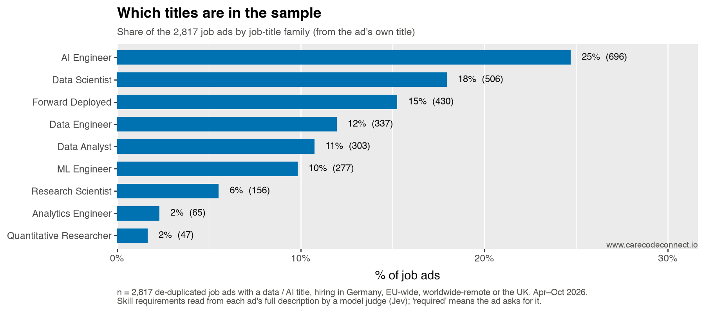
AI Engineer is the most frequent title at 25%, then Data Scientist (18%) and Data Engineer (12%). Analytics Engineer (2%) and Quantitative Researcher (2%) are rarest.
Conway’s danger zone is more than a quarter of the market
Conway drew his freehand; the regions carried no numbers. Here they are sized by how many ads land in each — an ad joins a circle if it requires at least one skill mapped to it.
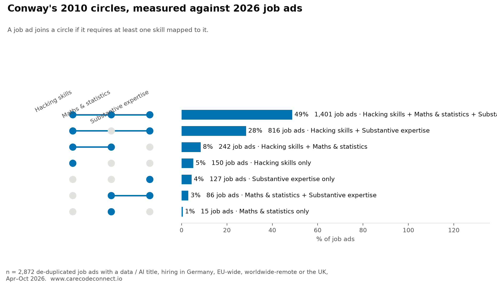
28% of ads ask for code and domain engagement but no statistics: the second-largest region, behind the centre (49%) and larger than his machine learning (8%) and traditional research (3%) lenses combined.
7 tracked skills — LLM applications, agents, RAG, evaluation, fine-tuning, observability, responsible AI — fit none of the three circles. 51% of ads require at least one, rising to 88% of AI Engineer ads, and the share is flat across every month.
Half the market asks for a skill his circles cannot see
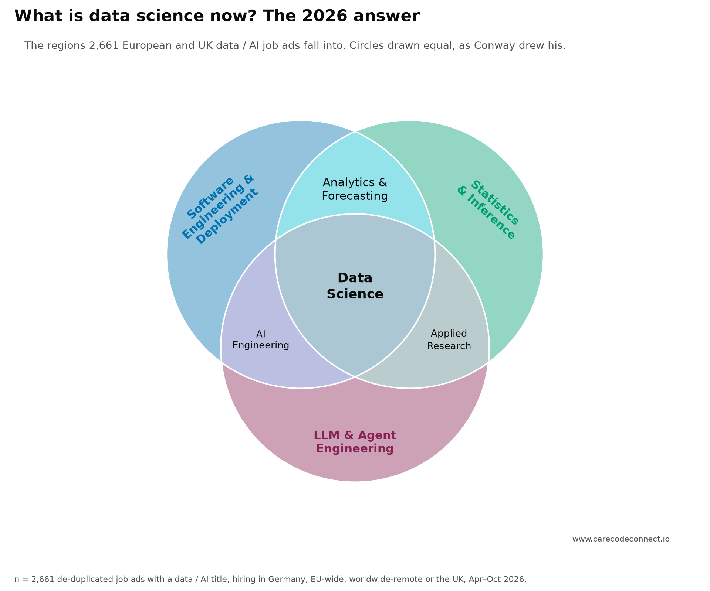
Circles chosen to fit what the ads cluster into. Two are Conway’s renamed; one is new.
- Software engineering & deployment — his hacking skills, 84% of ads, the largest circle. Model serving alone is required in 48%. Building and shipping are not separate trades: 61% of ads require both, 12% building alone, 6% deployment alone.
- Statistics & inference — his maths and statistics, 49%, the one circle surviving intact. Deep learning and NLP have left it for the LLM circle; product analytics and BI have joined it.
- LLM & agent engineering — new, 54%.
- Substantive expertise is no longer a circle. Stakeholder communication appears in 71% of ads, too universal to divide anyone.
By region: data science, all three circles at once, is 25% of ads against 49% under Conway’s. AI engineering — engineering and LLM work without inference, his danger zone — is the largest lens at 25%, 51% of it titled AI Engineer. Analytics & forecasting is 14%, applied research 2%.
More ads call a model than build one
30% of ads require building or training a model — classical ML, deep learning, fine-tuning, computer vision, recommenders. 42% require calling one: LLM applications, retrieval, agents, observability. Only 15% require both. 27% want the API work with no model-building at all, against 15% building without ever touching an API. Fine-tuning, the skill between them, is required in 8%.
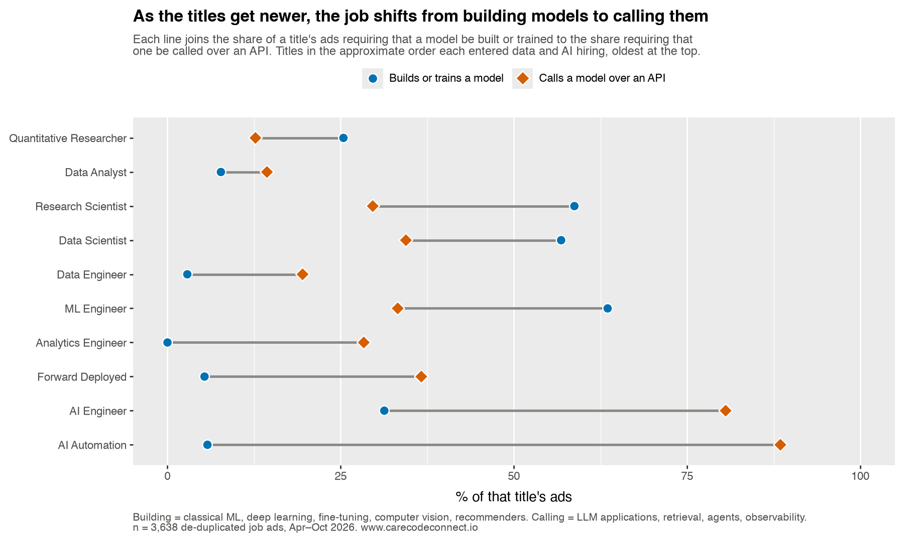
ML Engineer builds in 64% of its ads, Research Scientist 60%, Data Scientist 55%. AI Engineer inverts it: 81% call an API, 31% build. Analytics Engineer is the clean case — 0% build, 35% call.
Machine learning of any kind is required in 19% of ads (classical 11%, deep learning 11%), the LLM stack in 44%. 36% want the LLM stack and require no machine learning, against 11% the reverse.
Machine learning is not a circle on the redrawn diagram because it divides nothing. Drawn generously it covers 26% of ads (745), of which 99.7% already fall inside one of the three circles and 49% in the dead centre; its own circle would enclose 2 ads. It runs through all three — 28% of the engineering circle, 40% of inference, 38% of the LLM circle. Where required, it has moved toward engineering: 71% of ML ads require model serving against 42% of the rest.
Communication outranks every technical skill
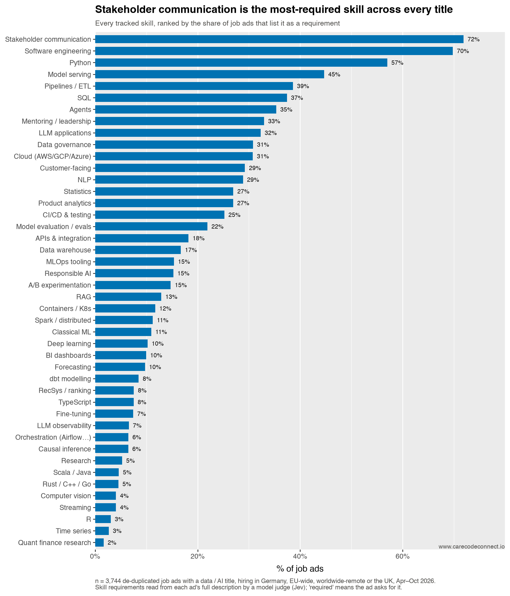
stakeholder communication leads at 71%, then software engineering (69%), Python (57%), model serving (48%), agents (36%), pipelines / ETL (35%) and SQL (34%). The tail is the specialist end: computer vision 4%, streaming 4%, R 3%, time series 3%, quant finance research 2%.
The titles form a chain, and ML Engineer is the hinge
Each title’s profile is the share of its ads requiring each skill; an edge is the Euclidean distance between two profiles, so smaller means more alike. Beside it, the skills separating the pair.
Blue is the inference branch, orange engineering, purple data; ML Engineer is the hinge. Solid edges trace the chain across the market, dashed edges the nearest neighbour of a side title.
The market is a chain, not a cluster: Quantitative Researcher → Data Scientist → ML Engineer → AI Engineer, every step between 1.10 and 1.41, while Data Scientist to AI Engineer direct is 1.48. Data Engineer and Analytics Engineer sit at 0.98, the shortest distance on the map, and reach the rest only through Data Analyst.
The titles form islands, not a continuum
Each dot is one ad, placed by the skills its description requires (t-SNE: nearby dots have similar requirements; distances carry no scale). Click a title in the legend to hide it; use the drop-down to see where a skill area concentrates.
The titles form islands, not a continuum. Data Analyst and Data Engineer are separate islands on the left, AI Engineer fills the right, Forward Deployed holds its own corner at the bottom. ML Engineer alone scatters across both halves.
Statistics is what divides the two titles
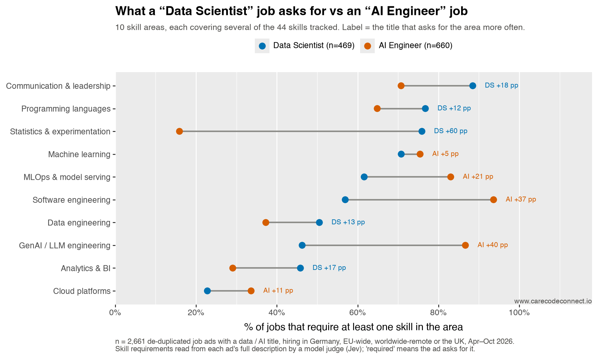
Each row is a skill area and the two dots are each title’s share requiring at least one skill in it, so the bar between them is the disagreement. Statistics & experimentation is the widest split (75% against 15%), GenAI / LLM engineering its mirror (46% against 88%). Machine learning itself is nearly even (70% against 75%).
Each title in its own words
Nine titles, in the approximate order each entered data and AI hiring. The dates are background — this sample runs 2026-04 to 2026-10 and can say nothing about when a title appeared — but everything after them is measured from the ads.
Across the whole sample, 30% of ads require building or training a model of some kind and 42% require calling a model someone else trained. That split is the thread running through these sections, and it moves with the chronology: the older the title, the likelier it is to build.
%%{init: {"theme": "neutral", "fontSize": 17, "flowchart": {"curve": "basis", "nodeSpacing": 26, "rankSpacing": 34}}}%%
flowchart TB
subgraph r0[" "]
direction LR
n0["Quantitative<br/>Researcher<br/>1980s–90s<br/>2% of ads"]
n1["Data<br/>Analyst<br/>1990s–2000s<br/>11% of ads"]
n0 --> n1
end
subgraph r1[" "]
direction LR
n2["Research<br/>Scientist<br/>~2012 in this form<br/>6% of ads"]
n3["Data<br/>Scientist<br/>2008<br/>18% of ads"]
n2 --> n3
end
subgraph r2[" "]
direction LR
n4["Data<br/>Engineer<br/>~2011–14<br/>12% of ads"]
n5["ML<br/>Engineer<br/>~2015–16<br/>10% of ads"]
n4 --> n5
end
subgraph r3[" "]
direction LR
n6["Analytics<br/>Engineer<br/>~2018–19<br/>2% of ads"]
n7["Forward<br/>Deployed<br/>~2023<br/>15% of ads"]
n6 --> n7
end
subgraph r4[" "]
direction LR
n8["AI<br/>Engineer<br/>~2023<br/>25% of ads"]
end
r0 --> r1
r1 --> r2
r2 --> r3
r3 --> r4
classDef row fill:none,stroke:none;
class r0,r1,r2,r3,r4 row;
1. Quantitative Researcher — finance, 1980s–1990s
47 ads, 2% of the sample
The oldest title here, and the one that got there first. Investment banks and hedge funds were hiring mathematicians and physicists to price derivatives and find trading signals two decades before anyone said “data scientist”. Everything the later titles claim as novel — statistics on large datasets, models in production, money riding on the output — was already the job.
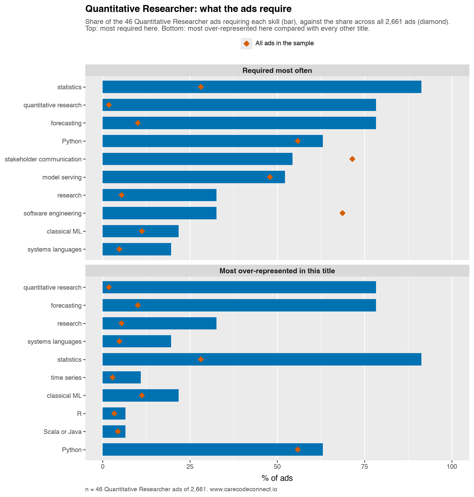
Nearest neighbour. Data Scientist (1.41 apart on the skills map), then Research Scientist (1.51). Furthest: Analytics Engineer (2.43).
Build or call. 26% build or train a model, 9% call one over an API, and 2% want the API work with no model-building at all.
In the ads’ own words. The phrases most over-represented in this title, read out of the ads by a second model that was never shown our skill list, with the share of the title’s ads using each: “finance” (10%), “large dataset analysis” (10%), “applied mathematics” (8%), “market microstructure” (8%), “portfolio construction” (8%).
5+ years of experience with quantitative modeling and pricing
— one of 3 Quantitative Researcher ads (6% of the title) that ask for “quantitative modeling”
Strong understanding of market mechanics and microstructure invariants
— one of 4 Quantitative Researcher ads (8% of the title) that ask for “market microstructure”
2. Data Analyst — business intelligence, 1990s–2000s
303 ads, 11% of the sample
Grew out of business intelligence and reporting. The job was to turn a company’s own operational data into numbers a manager could act on, and the tooling was the warehouse and the dashboard rather than the notebook.
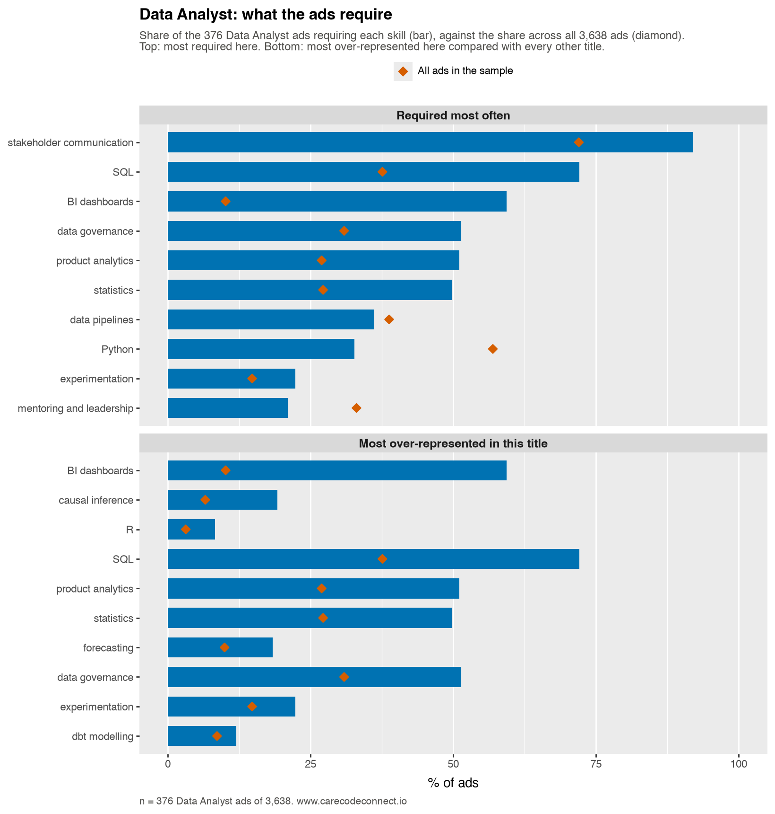
Nearest neighbour. Data Scientist (1.28 apart on the skills map), then Analytics Engineer (1.45). Furthest: AI Engineer (2.11).
Build or call. 8% build or train a model, 16% call one over an API, and 15% want the API work with no model-building at all.
In the ads’ own words. The phrases most over-represented in this title, read out of the ads by a second model that was never shown our skill list, with the share of the title’s ads using each: “excel” (19%), “power bi” (32%), “tableau” (29%), “data analytics” (8%), “looker” (17%).
data visualisation tools such as Power BI
— one of 88 Data Analyst ads (32% of the title) that ask for “power bi”
A/B testing that directly influence product improvements
— one of 51 Data Analyst ads (18% of the title) that ask for “a/b testing”
3. Research Scientist — industrial labs, long-standing; current AI form from ~2012
156 ads, 6% of the sample
The title is far older than data science — industrial research labs have used it for most of a century — but the version that shows up in this sample is the deep-learning lab role that followed the 2012 ImageNet result: publish, train large models, push the state of the art.
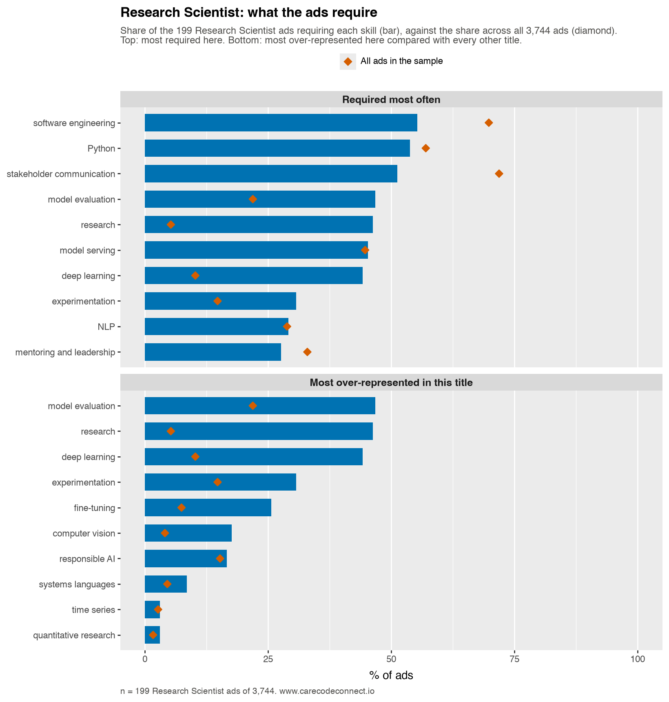
Nearest neighbour. ML Engineer (0.99 apart on the skills map), then Data Scientist (1.19). Furthest: Analytics Engineer (2.08).
Build or call. 60% build or train a model, 29% call one over an API, and 8% want the API work with no model-building at all.
In the ads’ own words. The phrases most over-represented in this title, read out of the ads by a second model that was never shown our skill list, with the share of the title’s ads using each: “diffusion models” (9%), “jax” (14%), “reinforcement learning” (19%), “cuda” (9%), “experimental design” (10%).
Strong empirical research skills in Reinforcement Learning
— one of 28 Research Scientist ads (19% of the title) that ask for “reinforcement learning”
state-of-the-art Deep Learning and Reinforcement Learning models
— one of 31 Research Scientist ads (21% of the title) that ask for “deep learning”
4. Data Scientist — coined 2008, mainstream from ~2012
506 ads, 18% of the sample
Coined in 2008 by D.J. Patil and Jeff Hammerbacher, then leading data at LinkedIn and Facebook, and made famous by the 2012 Harvard Business Review piece that opens this page. The pitch was a hybrid: enough statistics to be rigorous, enough code to be self-sufficient, enough business sense to be listened to.
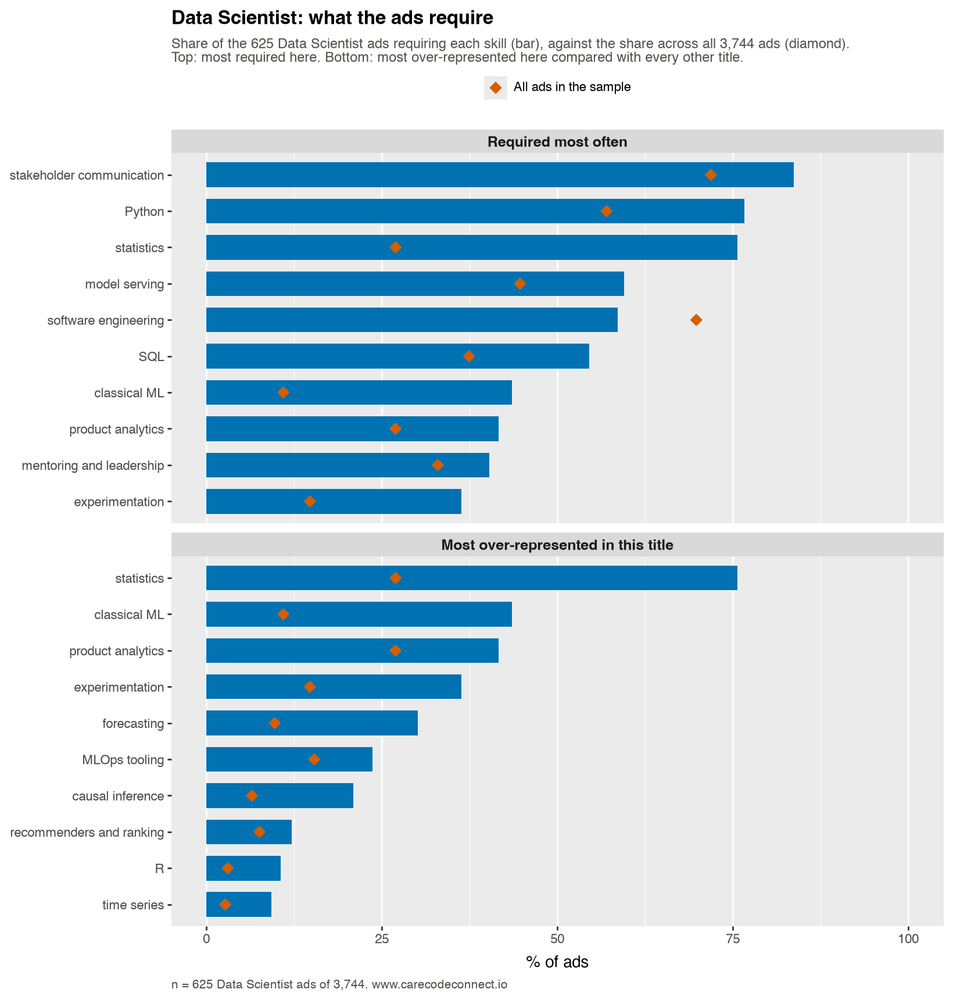
Nearest neighbour. ML Engineer (1.12 apart on the skills map), then Research Scientist (1.19). Furthest: Analytics Engineer (1.82).
Build or call. 55% build or train a model, 35% call one over an API, and 12% want the API work with no model-building at all.
In the ads’ own words. The phrases most over-represented in this title, read out of the ads by a second model that was never shown our skill list, with the share of the title’s ads using each: “regression” (6%), “clustering” (7%), “statistical modeling” (10%), “data science” (31%), “causal inference” (15%).
experimental design, causal inference and quasi-experimental methods
— one of 71 Data Scientist ads (15% of the title) that ask for “causal inference”
Expertise in machine learning and predictive modelling
— one of 35 Data Scientist ads (7% of the title) that ask for “predictive modeling”
5. Data Engineer — ~2011–2014
337 ads, 12% of the sample
Split off from the data scientist once companies discovered that most of the work was moving and shaping data rather than modelling it. Hadoop, then Spark, then the cloud warehouse made the pipeline a full-time job.
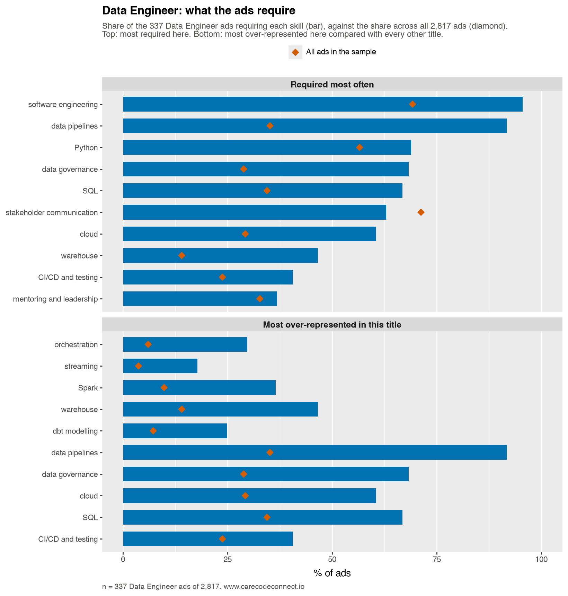
Nearest neighbour. Analytics Engineer (0.98 apart on the skills map), then Data Analyst (1.67). Furthest: Quantitative Researcher (2.24).
Build or call. 4% build or train a model, 23% call one over an API, and 22% want the API work with no model-building at all.
In the ads’ own words. The phrases most over-represented in this title, read out of the ads by a second model that was never shown our skill list, with the share of the title’s ads using each: “azure data factory” (8%), “medallion architecture” (7%), “apache airflow” (6%), “delta lake” (7%), “etl/elt” (12%).
Own the design of scalable ETL/ELT pipelines
— one of 26 Data Engineer ads (12% of the title) that ask for “etl/elt”
6. ML Engineer — ~2015–2016
277 ads, 10% of the sample
Split off from the other side of the data scientist: the half concerned with getting a trained model to run reliably for real users. The title tracks the arrival of model serving, feature stores and the tooling that became MLOps.
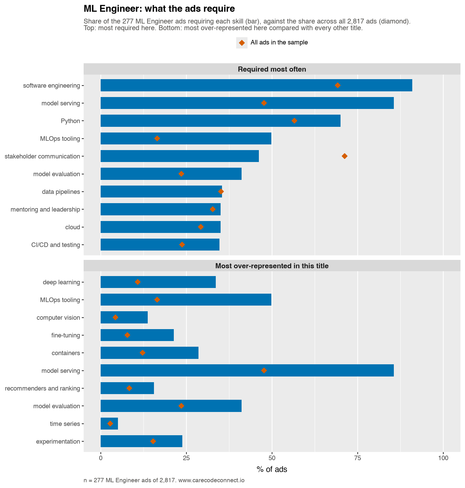
Nearest neighbour. Research Scientist (0.99 apart on the skills map), then AI Engineer (1.10). Furthest: Analytics Engineer (2.02).
Build or call. 64% build or train a model, 34% call one over an API, and 8% want the API work with no model-building at all.
In the ads’ own words. The phrases most over-represented in this title, read out of the ads by a second model that was never shown our skill list, with the share of the title’s ads using each: “kubeflow” (7%), “model serving” (13%), “distributed training” (8%), “vllm” (6%), “model training” (10%).
training and iterating on deep learning models
— one of 25 ML Engineer ads (10% of the title) that ask for “model training”
transition of machine learning models into production
— one of 44 ML Engineer ads (17% of the title) that ask for “model deployment”
7. Analytics Engineer — ~2018–2019
65 ads, 2% of the sample
The newest of the analytics titles, and essentially a dbt-era invention: apply software engineering practice — version control, tests, modular transformations — to the modelling layer between the warehouse and the dashboard.
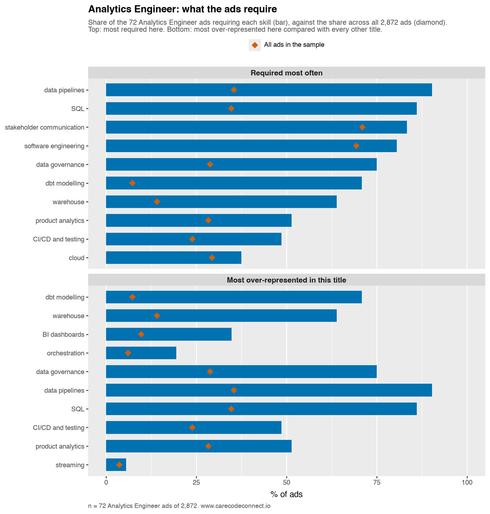
Nearest neighbour. Data Engineer (0.98 apart on the skills map), then Data Analyst (1.45). Furthest: Quantitative Researcher (2.43).
Build or call. 0% build or train a model, 35% call one over an API, and 35% want the API work with no model-building at all.
In the ads’ own words. The phrases most over-represented in this title, read out of the ads by a second model that was never shown our skill list, with the share of the title’s ads using each: “semantic layer” (10%), “ai-assisted workflows” (6%), “cdc” (6%), “double-entry bookkeeping” (6%), “lightdash” (6%).
modeled in dbt and orchestrated by Airflow
— one of 38 Analytics Engineer ads (79% of the title) that ask for “dbt”
8. Forward Deployed — Palantir-era term, mainstream from ~2023
430 ads, 15% of the sample
A solutions-engineering lineage with a newer name. The engineer is embedded with the customer, building and adapting the product in front of them. The term escaped Palantir and spread as AI vendors discovered their product needed fitting to each buyer.
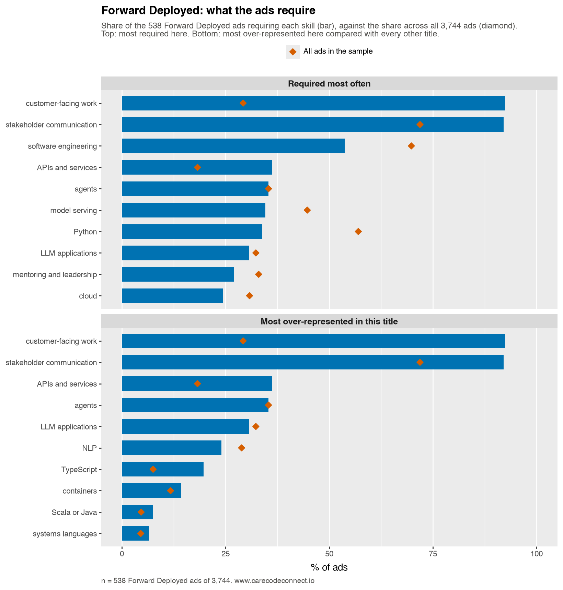
Nearest neighbour. Research Scientist (1.36 apart on the skills map), then AI Engineer (1.38). Furthest: Analytics Engineer (1.94).
Build or call. 6% build or train a model, 37% call one over an API, and 33% want the API work with no model-building at all.
In the ads’ own words. The phrases most over-represented in this title, read out of the ads by a second model that was never shown our skill list, with the share of the title’s ads using each: “solutions engineering” (13%), “solution architecture” (9%), “customer communication” (6%), “technical documentation” (7%), “project management” (6%).
8+ years experience in Solution Engineering role
— one of 49 Forward Deployed ads (13% of the title) that ask for “solutions engineering”
9. AI Engineer — ~2023
696 ads, 25% of the sample
The newest title in the sample and already the largest. It arrived with the production LLM stack — applications, retrieval, agents, evaluation — and it is the one title here defined by what it builds with rather than what it knows.
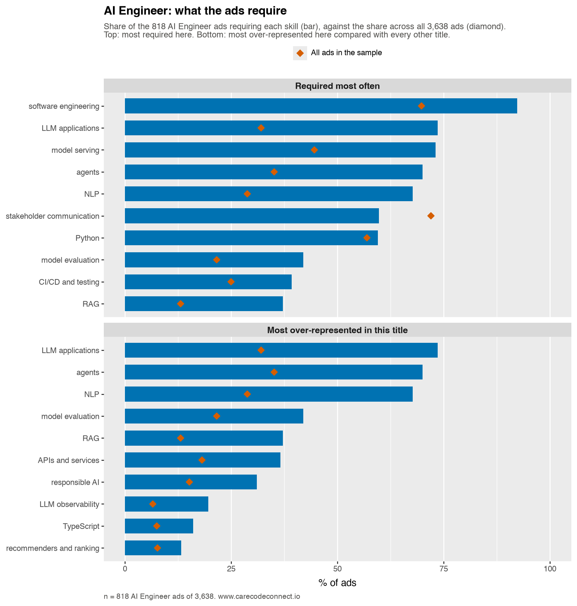
Nearest neighbour. ML Engineer (1.10 apart on the skills map), then Forward Deployed (1.38). Furthest: Quantitative Researcher (2.16).
Build or call. 31% build or train a model, 81% call one over an API, and 55% want the API work with no model-building at all.
In the ads’ own words. The phrases most over-represented in this title, read out of the ads by a second model that was never shown our skill list, with the share of the title’s ads using each: “langgraph” (16%), “tool use” (8%), “mcp” (9%), “langchain” (16%), “vector databases” (14%).
using large language models, RAG, vector search
— one of 157 AI Engineer ads (25% of the title) that ask for “rag”
AI application patterns (RAG, agents, tool use)
— one of 11 AI Engineer ads (2% of the title) that ask for “agents”
Exposure to fine-tuning or continuous learning techniques
— one of 35 AI Engineer ads (6% of the title) that ask for “fine-tuning”
What it adds up to: two jobs, divided by statistics
Conway’s framework no longer describes what is advertised. His danger zone is 28% of the market rather than a rare corner, and 51% of ads require a skill his circles cannot see. Data science has not been renamed; it has split into adjacent jobs along three branches.
- Engineering — AI Engineer, ML Engineer, Forward Deployed, Research Scientist. LLM applications, agents, NLP, model serving, evals, CI/CD. Statistics is required in 11% of AI Engineer ads.
- Inference — Quantitative Researcher, Data Scientist, Data Analyst. Statistics, experimentation, forecasting, SQL, BI. Quant ads are the extreme: 91% statistics, 77% forecasting.
- Data — Data Engineer and Analytics Engineer. Pipelines (92% and 89%), warehouse, dbt, cloud, almost no statistics (4% and 6%). Analytics Engineer is not a flavour of Data Analyst (1.45 away) but the analyst-facing end of data engineering — SQL in 85% of its ads, dbt in 72%.
So the two titles are two jobs, and the gap between them is statistics. A Data Scientist ad asks whether a number means anything; an AI Engineer ad asks whether a system ships. ML Engineer is the hinge, and the shortest route from either side to the other.
One caution on all of it: these are ads, not jobs. They describe what employers ask for, which is not always what the work turns out to be.